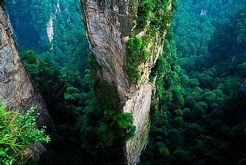
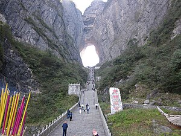
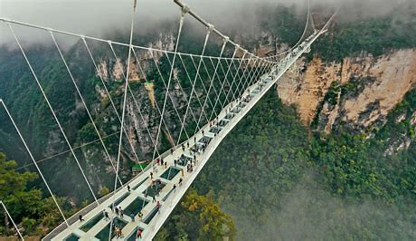
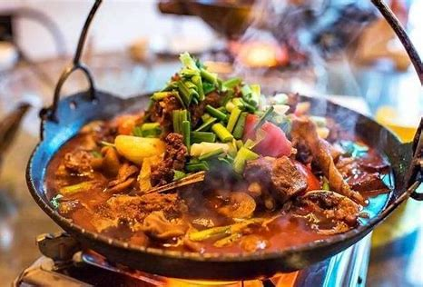

Zhangjiajie: A Natural Wonderland of Towering Peaks
Zhangjiajie, a city located in the northwestern part of Hunan Province, captivates visitors with its unparalleled natural beauty. While it may not boast the long and storied dynastic history of some of China's ancient cities, Zhangjiajie holds a unique and special place in the world due to its spectacular and awe-inspiring landscapes.
The city is famously home to the Zhangjiajie National Forest Park, a place dominated by thousands of towering sandstone pillars that dramatically rise from the earth, creating a surreal landscape that seems straight out of a fantasy world. This extraordinary natural wonder has not only served as inspiration for movie settings but also attracts nature enthusiasts, adventure seekers, and photographers from all corners of the globe.
People travel here to immerse themselves in the grandeur of nature, whether it's hiking along the scenic forest trails, taking in the breathtaking vistas from observation decks, or simply breathing in the crisp, fresh mountain air. With its continuously developing infrastructure for tourism, Zhangjiajie offers comfortable accommodations and convenient transportation options, making this natural paradise increasingly accessible for those in search of an extraordinary and unforgettable natural experience.
Zhangjiajie Highlights
Getting There and Away
By Air
Zhangjiajie Hehua International Airport serves as the main gateway to the city. The airport offers flights to numerous domestic cities, including major hubs like Beijing, Shanghai, Guangzhou, and Shenzhen. Additionally, there are some international flights connecting Zhangjiajie to destinations in nearby Asian countries. At the airport, travelers can find a variety of amenities, such as restaurants, cafes, and shops. To travel from the airport to the city center, visitors can choose from taxis, shuttle buses, or utilize ride-hailing services.
By Train
Zhangjiajie has two primary railway stations. Zhangjiajie Railway Station primarily handles regular trains, providing connections to other parts of Hunan Province and neighboring provinces. Zhangjiajie West Railway Station is a high-speed rail station, offering a faster way to reach major cities like Changsha.
Getting Around Zhangjiajie
Bus
The local bus network in Zhangjiajie provides extensive coverage throughout the city. Bus fares are generally affordable, typically ranging from 1 to 2 yuan. While cash is accepted, it is advisable to have the exact fare ready. Many buses also support mobile payments through popular platforms like Alipay or WeChat Pay. For added convenience, some locals use a transportation card. Bus stops are clearly marked, but it's important to be aware that buses can become crowded, especially during peak tourist seasons.
Taxi / Ride-hailing
Taxis are readily available throughout Zhangjiajie. They operate using meters, with fares calculated based on the distance traveled and waiting time. Taxis can be hailed on the street or found at designated taxi stands located outside the airport, railway stations, and major tourist attractions. Ride-hailing apps, such as Didi, are also a popular and convenient alternative for transportation.
Famous Attractions
Zhangjiajie National Forest Park
A UNESCO World Heritage Site, the park is renowned for its thousands of towering sandstone pillars that create a dramatic and awe-inspiring landscape. Visitors can wander among these majestic formations to truly appreciate the grandeur and power of nature. The park's otherworldly scenery, often likened to the landscapes in the movie Avatar, is a photographer's paradise, attracting visitors from around the globe.
Tianmen Mountain
Tianmen Mountain is famous for the natural wonder of Tianmen Cave, a massive archway carved into the mountain. The cable car ride to the summit offers breathtaking panoramic views. For thrill-seekers, the glass-bottomed skywalk along the mountain's edge provides an exhilarating and unforgettable experience.
Zhangjiajie Grand Canyon
The Zhangjiajie Grand Canyon features deep gorges, crystal-clear streams, and spectacular waterfalls. The canyon's highlight is the world-famous Zhangjiajie Glass Bridge. Walking across the bridge offers stunning views of the scenery below, creating an unforgettable and thrilling adventure.
Cultural Experiences
Tujia Ethnic Culture
The Tujia people have a rich and vibrant culture. Visitors can explore Tujia villages to see traditional stilt houses. Participating in folk dances and learning about their intricate handicrafts, such as brocade weaving, provides a fascinating glimpse into their unique traditions.
A Taste of Zhangjiajie's Famous Foods
Sanxiaguo (Three-Pot Dish)
Sanxiaguo is a flavorful local dish that typically combines pork offal, radish, and tofu in a spicy pot. The slow-cooking process allows the ingredients to meld together, creating a rich and hearty stew. The dish is known for its spicy and savory flavor, making it a local favorite, especially during colder weather.
Zhangjiajie-style Preserved Meat
The meat is prepared using a traditional method of salting and smoking, which imparts a deep, smoky flavor. It is often stir-fried with vegetables. The preservation process enhances the meat's flavor and gives it a pleasantly chewy texture, showcasing local food-preservation techniques.
Tujia-style Glutinous Rice Cake
Made from glutinous rice, this cake has a soft and chewy texture. It is often served with either sweet or savory toppings, such as sugar or minced meat. This simple yet delicious treat provides a taste of Tujia ethnic food culture.
Where to Stay
Zhangjiajie National Forest Park Entrance Area
Offers exceptional convenience for exploring the park. Quick access to pillars and forests. Shuttle buses and taxis available. Range from guesthouses to mid-range hotels. Ideal for early park entry or evening strolls.
Tianmen Mountain Base Area
Excellent choice for visiting Tianmen Mountain, close to the cable car station. Features local restaurants. Accessible public transport. Convenient base for mountain adventures with a lively atmosphere.
Wulingyuan Scenic Area Vicinity
Known for unique karst landforms. Variety of accommodation options. Shuttle services within the zone and good road connections. Explore scenery day and night. Budget inns to upscale resorts available.
Zhangjiajie Grand Canyon Entrance Vicinity
Convenient for visiting the Grand Canyon and glass bridge. Easy access for hiking. Local transportation available. Often provides a peaceful environment close to the main attraction.
Zhangjiajie Ancient City Area
Rich in history and culture. Explore traditional streets, temples, and sample local snacks. Convenient public transport. Small guesthouses to mid-range hotels. Experience local culture at a leisurely pace.
Weather and Dressing Guide
Zhangjiajie has a subtropical monsoon climate with distinct seasons. Mountain weather can differ from the city.
Cold Phase (Dec - Feb)
-5°C to 10°C (23°F - 50°F). Dry, occasional snow. Wear thick down jackets, thermal clothing, scarves, gloves, hats. Layering recommended.
Cool-Warming Phase (Mar - May)
8°C to 22°C (46°F - 72°F). Starts dry, becomes rainy. Long sleeves, light sweaters, windbreaker initially; lighter clothes later. Bring an umbrella.
Warm-Rainy Phase (Jun - Aug)
20°C to 30°C (68°F - 86°F). High humidity, rain. Light, breathable clothes (cotton/linen), shorts, short sleeves, dresses, sandals. Bring a shawl for AC, raincoat, sun protection.
Cooling-Down Phase (Sep - Nov)
25°C to 10°C (77°F - 50°F). Generally dry. Long sleeves, sweaters, jeans; add thicker jacket later. Umbrella handy.
Always check the local forecast before your trip.
Zhangjiajie: Must-Do List
- Marvel at the unique sandstone peaks in Zhangjiajie National Forest Park.
- Ride the world-renowned Bailong Elevator.
- Walk across the thrilling Zhangjiajie Grand Canyon Glass Bridge.
- Hike the scenic Tianmen Mountain Trail.
- Savor the flavors of Zhangjiajie-style bacon.
- Indulge in a delicious Sanxiaguo (Three-Pot Dish).
- Enjoy the captivating "Charming Xiangxi" folk show.
- Take a relaxing bamboo raft ride on the Maoyan River.
- Explore a Tujia village to experience their unique ethnic culture.
- Wander through the charming Xibu Ancient Street.
- Warm up with a flavorful local-ingredient hot pot.
- Take a cable car ride for breathtaking mountain views.
- Participate in a local tea-tasting session.
- Shop for beautiful Tujia brocade handicrafts.
Classic Itineraries
Two-Day Natural Wonders Route
Day 1: Arrive, check in near National Park. Cable car up for peak views. Afternoon walk along Golden Whip Stream. Evening local dinner (bacon, stew).
Day 2: Visit Tianmen Mountain via cableway. Explore glass walkways. Afternoon hike Tianmen Mountain Trail. Evening dinner in city center, depart.
Three-Day Scenic and Cultural Route
Day 1: Arrive, check in. Visit Grand Canyon & Glass Bridge. Explore canyon on foot. Evening dinner (local river fish).
Day 2: National Park, Bailong Elevator, explore Yuanjiajie. Evening dinner at local farmhouse.
Day 3: Visit Tujia ethnic village (culture, handicrafts). Afternoon folk show ("Charming Xiangxi"). Farewell dinner, depart.
Four-Day All-Encompassing Route
Day 1: Arrive, check in. Explore Huangshizhai Scenic Area (National Park). Afternoon nature walk. Evening dinner (local wild vegetables).
Day 2: Visit Tianmen Mountain. Afternoon cable car ride around mountains. Evening high-end dinner in city.
Day 3: Maoyan River bamboo rafting. Explore riverside villages. Evening riverside BBQ dinner.
Day 4: Visit Xibu Ancient Street (shopping). Relax at local tea house. Farewell dinner (rooftop restaurant), depart.